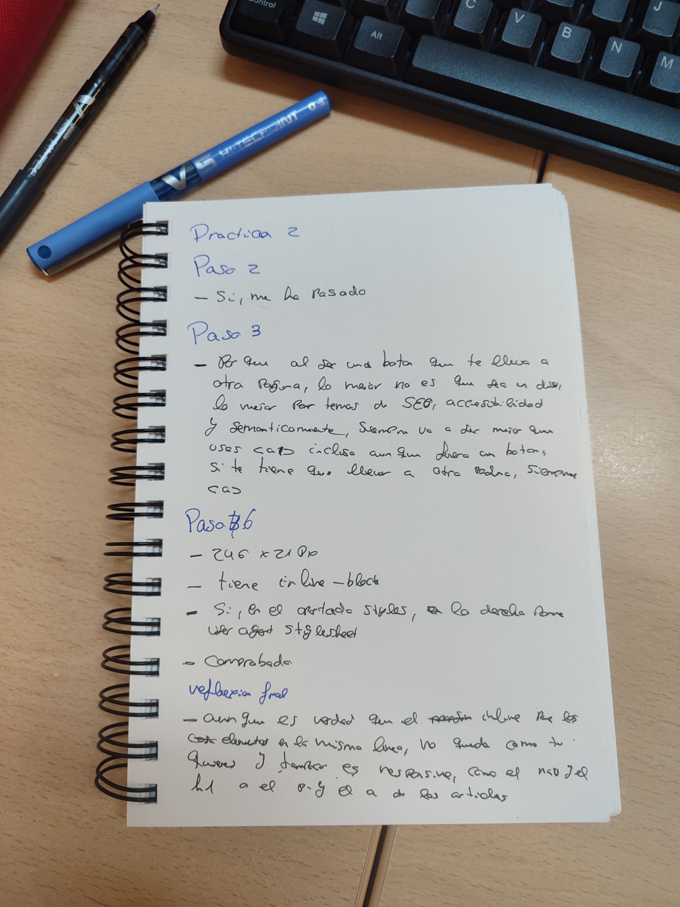

☐ El dibujo con las zonas marcadas como "en fila".
☐ Un nav con al menos 4 enlaces en fila usando display: inline-block, sin Flexbox.
☐ Un botón "Leer más" en cada artículo, construido con y display: inline-block.
☐ Todas las imágenes con display: block y max-width: 100%.
☐ Header, main y footer envueltos cada uno en un .container con max-width y margin: 0 auto.
☐ Respuestas escritas a las 4 comprobaciones de DevTools del Paso 6.
☐ Una reflexión final de 3-4 líneas: ¿qué partes de tu página siguen sin poder colocarse exactamente como querías sin Flexbox o Grid?
